Call:
lm(formula = pass ~ hours_studied, data = p_data, na.action = na.exclude)
Residuals:
Min 1Q Median 3Q Max
-0.76611 -0.23291 -0.05967 0.23460 0.79896
Coefficients:
Estimate Std. Error t value Pr(>|t|)
(Intercept) 0.0254387 0.0281464 0.904 0.367
hours_studied 0.0253011 0.0009859 25.664 <2e-16 ***
---
Signif. codes: 0 '***' 0.001 '**' 0.01 '*' 0.05 '.' 0.1 ' ' 1
Residual standard error: 0.3132 on 498 degrees of freedom
Multiple R-squared: 0.5694, Adjusted R-squared: 0.5686
F-statistic: 658.6 on 1 and 498 DF, p-value: < 2.2e-16Week 5: Binary Outcomes – Linear Probability Models & Logistic Regression
Jesper Lindmarker
How difficult was last week?
Week 5: Binary Outcomes – Linear Probability Models & Logistic Regression
🔁 Week 4 Recap: Model Specification & Causal Thinking
We learned how to:
Think about what variables to include (and what not to include)
Identify confounders, mediators, and colliders
Use DAGs to reason about causal structure
Understand bias from omitted variables or bad controls
🧠 Example: “Does studying more cause higher exam scores — or is something else at play?”
📍 The Course So Far
Week 1 – Regression basics
One X → one continuous Y.
Learned the core regression framework.Week 2-3 – Adding complexity to X
Multiple predictors, categorical variables, interactions.
Still: continuous Y.Week 4 – Thinking before modelling
Deciding what to include and why using causal reasoning.
Still: continuous Y.Week 5-6 – New types of Y
Regression logic stays the same, but now Y is categorical.
This changes the assumptions and requires new tools.
🗺️ What We’ll Talk About Today
This week, we move from continuous outcomes to binary outcomes.
We’ll explore:
Why binary is different
👉 Why 0/1 variables break some of our OLS assumptionsThe Linear Probability Model (LPM)
👉 How it works, pros and consLogistic regression
👉 How transforming probabilities into log-odds lets us fit a straight lineInterpreting coefficients
👉 Log-odds, odds ratios, and marginal effectsComparing LPM and logistic
👉 When each is useful
Exercise #1 to do now!
As in Lecture 1, consider the association between hours studied and exam results for SDS-I. But instead of the exam score, consider pass/fail.
- 📝 Task: On paper, sketch a scatterplot (NO LINE) of this association for you.
- x-axis: potential hours you could have studied for the SDS-I exam,
- y-axis: 0 if you think you would fail, 1 for a pass.
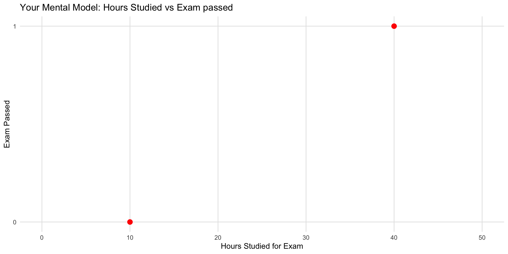
Exercise #2 to do now!
In the same plot, consider the probability of pass/fail.
- x-axis: potential hours you could have studied for the SDS-I exam,
- y-axis: the probability of you passing.
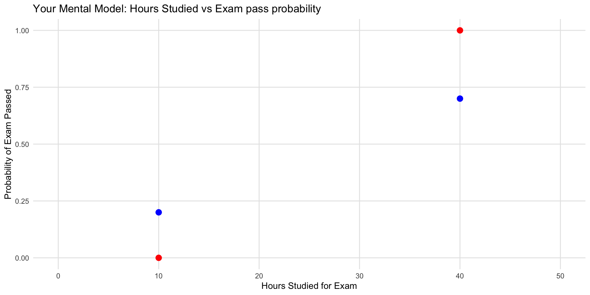
💬 Discussion
- What shapes did we get?
- Which shapes make sense in real life?
- How is this different from the Week 1 exercise on exam score?
Why Talk About Binary Outcomes?
Binary outcome = only two possibilities:
- 1 / 0
- Yes / No
- Pass / Fail
Why Are Binary Outcomes Important?
- They are everywhere in social science.
- And they force us to model probability directly — not levels, but the chance that an event happens.
- Passed the course (yes/no)
- Voted (yes/no)
- Has a job (yes/no)
- Married (yes/no)
- Migrated this year (yes/no)
- Trusts government (yes/no)
- Attended protest (yes/no)
- Paid rent late (yes/no)
- Started a business (yes/no)
Binary Outcomes in Other Fields
- Survived 5 years after diagnosis (yes/no)
- Disease present (yes/no)
- Smoker (yes/no)
- Took treatment (yes/no)
- Side effect occurred (yes/no)
Other domains:
- Clicked the ad (yes/no)
- Customer churned (yes/no)
- Machine failed (yes/no)
- Loan defaulted (yes/no)
Why Binary Can Be Better
- Clear interpretation: “60% passed.”
- Inherently discrete events: childbirth, death, default.
- Avoids false precision: thresholds sometimes reflect reliable measurement.
- Policy relevance: many decisions operate on cutoffs.
Key point:
Today we’ll learn to model the probability that the event happens.
This is the backbone of logistic regression and most modern classification models.
🔁 From OLS to the Linear Probability Model
- We already know OLS can model a numeric outcome with a straight line.
- Linear Probability Model: treat 0/1 as numbers and run the same regression.
- \(Y_i \in \{0,1\},\quad Y_i=\beta_0+\beta_1X_{i1}+\cdots+\beta_kX_{ik}+\varepsilon_i\)
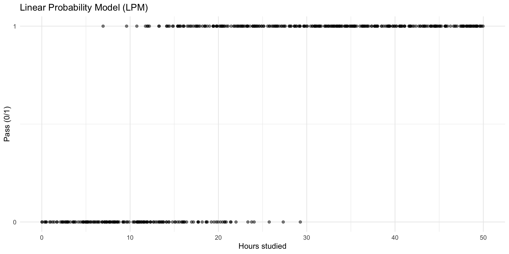
🔁 From OLS to the Linear Probability Model
- We already know OLS can model a numeric outcome with a straight line.
- Idea: treat 0/1 as numbers and run the same regression.
- \(Y_i \in \{0,1\},\quad Y_i=\beta_0+\beta_1X_{i1}+\cdots+\beta_kX_{ik}+\varepsilon_i\)
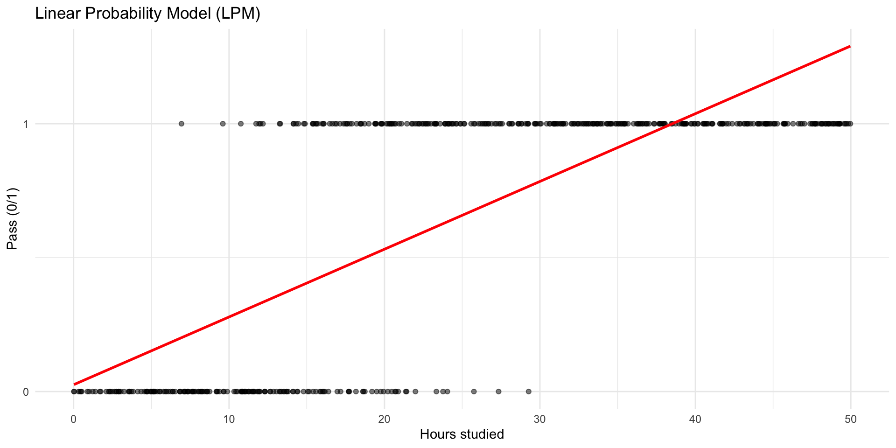
🔁 From OLS to the Linear Probability Model
How to interpret…
- Intercept?
- Coefficient?
🔁 From OLS to the Linear Probability Model
Like always, we can inspect the predictions from our model for each observation.
p_data$pred_lpm <- predict(lpm_model, newdata = p_data)
head(select(p_data, hours_studied, pass, pred_lpm), n = 15)# A tibble: 15 × 3
hours_studied pass pred_lpm
<dbl> <int> <dbl>
1 14.4 0 0.389
2 39.4 1 1.02
3 20.4 1 0.543
4 44.2 1 1.14
5 47.0 1 1.22
6 2.28 0 0.0831
7 26.4 1 0.694
8 44.6 1 1.15
9 27.6 1 0.723
10 22.8 1 0.603
11 47.8 1 1.24
12 22.7 1 0.599
13 33.9 1 0.883
14 28.6 1 0.750
15 5.15 0 0.156 🔁 From OLS to the Linear Probability Model
Why this might seem fine:
- It’s simple and uses tools we already know.
- The slope can be interpreted as the change in probability with X.
- In many cases, it works well enough for approximate answers.
- But: the model is not a “true” probability model
Why Not Just Do Linear Probability Models?
💡 First, unreasonable probabilites
“What does a probability of 1.25 even mean? How could nature give you more than 100% chance?”
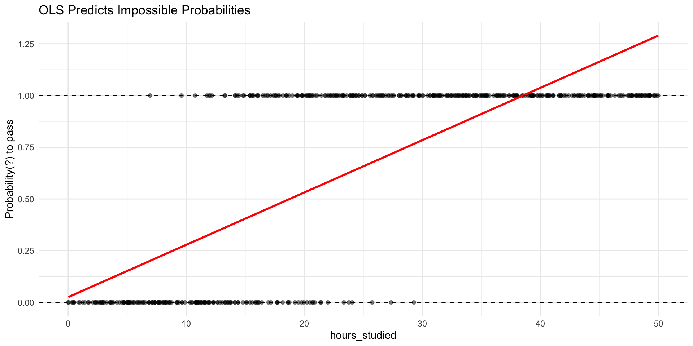
Second, incorrect funcional form
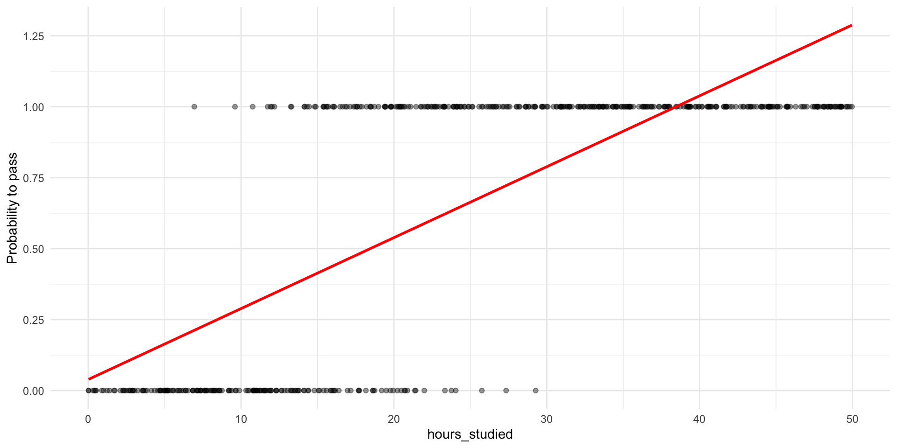
A more sensible shape for probabilities
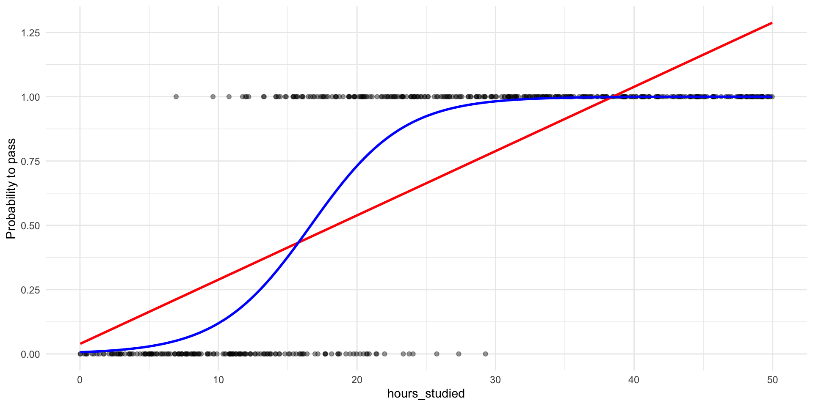
- What would you say about the marginal effect if we use a S-curve?
- The change in \(p\) depends on where you are on the S-curve.
How do we model such a shape?
- If we think the true relationship between \(X\) and the probability of \(Y=1\) has this S-shape, then we need a mathematical model that can produce that shape.
- The plan is to find a way to transform the problem into something we already know how to do: Draw a straight line.
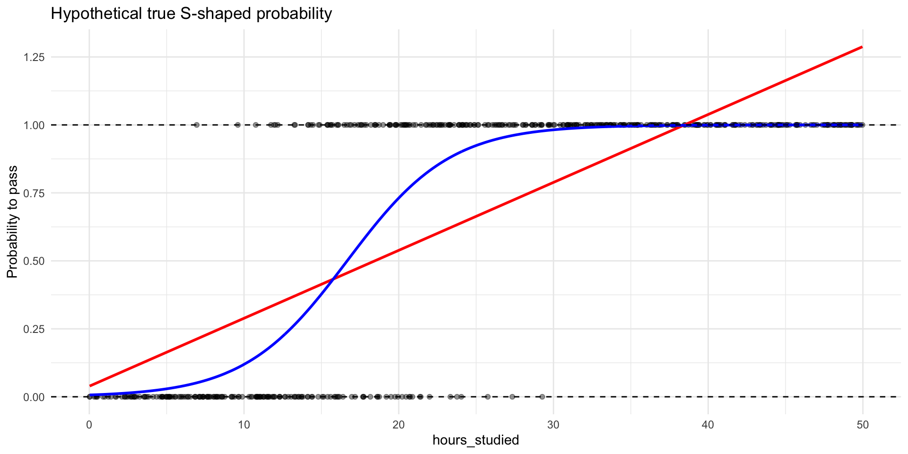
To demonstrate, we will model in reverse
Suppose this S-curve are the true probabilities
# A tibble: 6 × 2
hours_studied p_true
<dbl> <dbl>
1 14.4 0.335
2 39.4 0.999
3 20.4 0.757
4 44.2 1.000
5 47.0 1.000
6 2.28 0.0132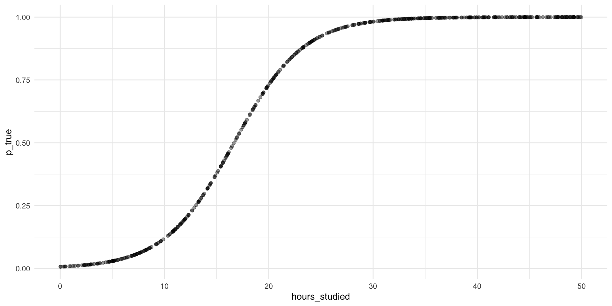
Step 1: Transform probabilities into odds
\[ \text{odds}=\frac{p}{1-p} \]
Step 1: Transform probabilities into odds
- The S-curve in probability space becomes an exponential curve in odds space.
- Easier to work with than raw probabilities (no [0,1] boundary)
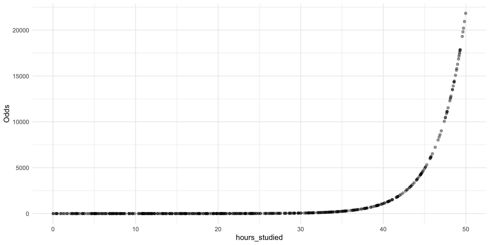
Step 2: Transform odds into log-odds (the logit)
\[ \log(\text{odds})=\log\!\left(\frac{p}{1-p}\right)=\text{logit}(p) \]
p_data <- p_data %>%
mutate(
log_odds = log(odds) # = logit(p_true)
)
head(select(p_data, hours_studied, p_true, odds, log_odds))# A tibble: 6 × 4
hours_studied p_true odds log_odds
<dbl> <dbl> <dbl> <dbl>
1 14.4 0.335 0.503 -0.686
2 39.4 0.999 920. 6.82
3 20.4 0.757 3.11 1.13
4 44.2 1.000 3810. 8.25
5 47.0 1.000 9018. 9.11
6 2.28 0.0132 0.0133 -4.32 Step 2: Transform odds into log-odds (the logit)
Let’s plot the log-odds against hours studied aaaaaaand….
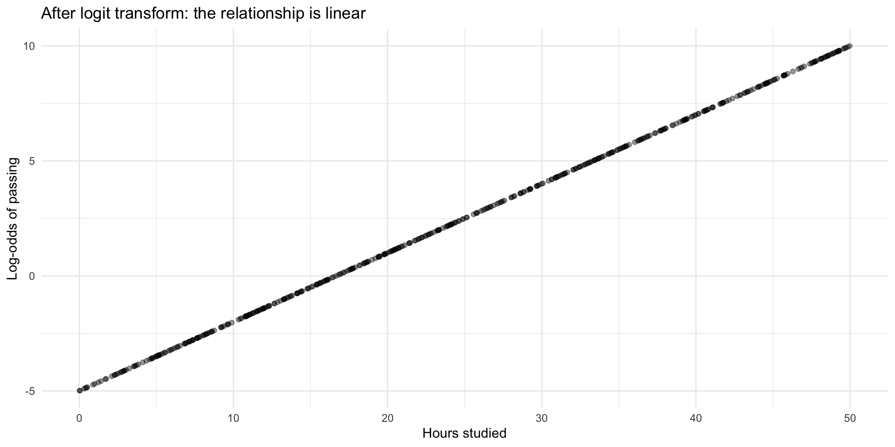
Transforming probabilities into something we can model
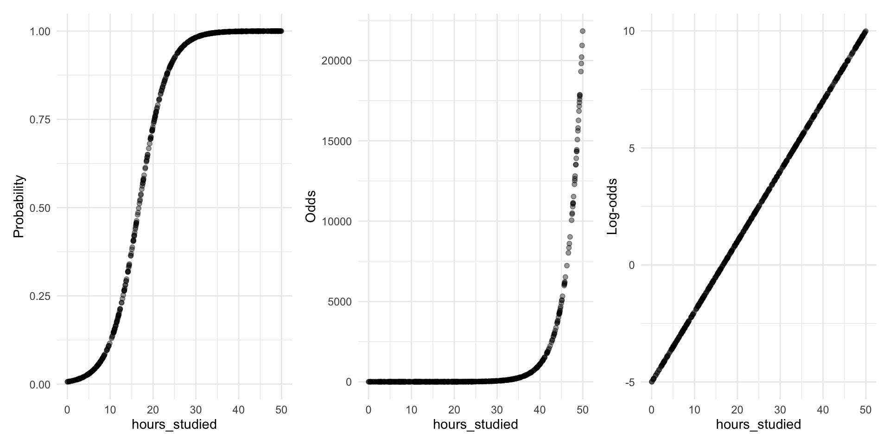
Summary
- When the probability of (Y=1) follows an S-curve, the log-odds of (Y=1) follow a straight line
- And a straight line we know how to model!
Logistic regression model
Great news! The log-odds can be modelled just like we are used to! \[\log(\text{odds}) = \beta_0 + \beta_1 X_1 + \beta_2 X_2 ... \]
Note: Log-odds can also be written \[\log(\text{odds}) = \log\left(\frac{p}{1-p}\right) = \text{logit}(p)\]
Let’s run a logistic regression
Call:
glm(formula = pass ~ hours_studied, family = "binomial", data = p_data)
Coefficients:
Estimate Std. Error z value Pr(>|z|)
(Intercept) -5.21420 0.54485 -9.57 <2e-16 ***
hours_studied 0.30802 0.03073 10.02 <2e-16 ***
---
Signif. codes: 0 '***' 0.001 '**' 0.01 '*' 0.05 '.' 0.1 ' ' 1
(Dispersion parameter for binomial family taken to be 1)
Null deviance: 646.20 on 499 degrees of freedom
Residual deviance: 228.92 on 498 degrees of freedom
AIC: 232.92
Number of Fisher Scoring iterations: 7Interpretation of log-odds coefficients
\[ \widehat{\log\left(\frac{p}{1-p}\right)} = -5.21 + 0.308 \cdot \text{hours_studied} \]
Intercept:
Whenhours_studied = 0, the estimated log-odds of passing are \(-5.21\).Coefficient:
Each additional hour studied is associated with an increase of \(0.308\) in the log-odds of passing the exam, holding other variables constant.It’s our friend the marginal effect! But in log-odds space.
Log-odds are not intuitive — what does “\(+ 0.3\) log-odds” mean?
Direction and uncertainty can still be interpreted.
💡 Towards better interpretation: Log-odds → Odds Ratios
💡 Towards better interpretation: Log-odds → Odds Ratios

💡 Towards better interpretation: Log-odds → Odds Ratios
\[ \log(\text{odds}) = \beta_0 + \beta_1 X \]
- Here, \(\beta_1\) is the additive effect on log-odds.
To get to odds, we exponentiate:
\[
\text{exp}(\log(\text{odds})) = \text{odds} = \text{exp}(\beta_0 + \beta_1 X) = e^{\beta_0 + \beta_1 X}
\]
- This gives us the multiplicative effect
The Odds Ratio
\[ \frac{\text{odds}_{\text{new}}}{\text{odds}_{\text{old}}} = e^{\beta_1} \]
- The exponentiated coefficient (\(e^{\beta_1}\)) is the odds ratio.
- Interpretation: Every 1-unit increase in \(X_1\) multiplies the odds by \(e^{\beta_1}\) holding all else constant.
- Once again it’s a marginal effect, but now in odds space
Odds ratios for our model
# A tibble: 2 × 7
term estimate std.error statistic p.value conf.low conf.high
<chr> <dbl> <dbl> <dbl> <dbl> <dbl> <dbl>
1 (Intercept) 0.00544 0.545 -9.57 1.07e-21 0.00171 0.0146
2 hours_studied 1.36 0.0307 10.0 1.20e-23 1.29 1.45 Intercept:
Whenhours_studied = 0, the estimated odds of passing are
\(e^{\beta_0} = 0.005\).Exponentiated coefficient:
Each additional hour studied multiplies the odds of passing by \(e^{\beta_1} = 1.36\) (i.e., about 36% increase in the odds per hour studied).Important! Null-hypothesis is \(e^{\beta_1} = 1\)
- \(x \times 1 = x\)
💡 Towards better interpretation: Probability marginal effects
Towards better interpretation: Probability marginal effects
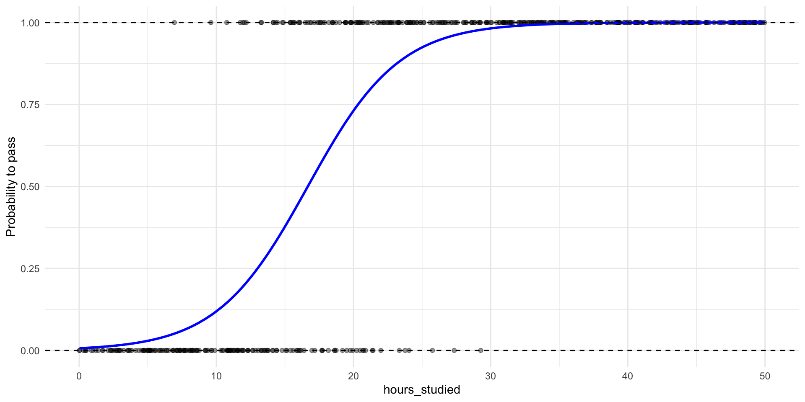
- The change in \(p\) depends on where you are on the S-curve.
- A bit like with non-linear relationships
Probabilities and Marginal Effects
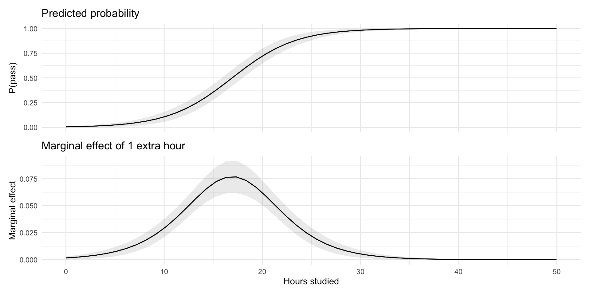
- The change in probability depends on where you are on the S-curve.
- Largest at \(p = 0.5\) (middle of curve)
- Smaller as \(p \to 0\) or \(p \to 1\)
Probabilities and Marginal Effects
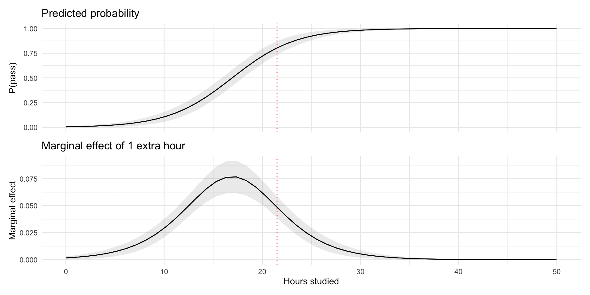
- At 22h studied, the change in probability of passing the exam for a one-unit increase in hours studied is \(5\) percentage points, holding other variables constant.
Marginal effects and Multiple Predictors
\[\text{logit}(p) = \beta_0 + \beta_1 X_1 + \beta_2 X_2 + \dots + \beta_k X_k\]
With multiple predictors enters a tricky problem…
Every predictor shifts the linear predictor → moves \(p\) to a different point on the S-curve.
Meaning, the level of every variable influences the marginal effect of any one variable.
🧠 Interpretation Challenge
For any predictor \(X_j\):
- There is no universal “effect on probability.”
- Individuals with different covariate profiles sit on different parts of the S-curve.
- This variation is inherent to nonlinear models.
🧪 Hypothetical Cases
Like we’ve done before, consider a few concrete individuals:
- Female, natural science, slept well, 20h study
- Male, humanities, slept poorly, 10h study
- Each hypothetical person will have a different effect of 1 additional hour of study, because their covariate values place them at different predicted probabilities.
🧮 Average Marginal Effects (AME)
If we can compute marginal effects for specific cases, we can compute them for every case in our sample.
- AME does exactly this:
- Compute the marginal effect of \(X_j\) for each observation \(i\).
- Take the average.
Interpretation:
The AME tells us, on the probability scale, how much the outcome probability typically changes in this sample when X_j increases by one unit, taking into account that marginal effects differ across individuals.
📊 Why AMEs Work So Well
They operate on the probability scale → no log-odds translation.
They summarize heterogeneity across individuals.
They allow coefficient-style comparisons between variables.
They directly answer:
> “How much does this variable usually shift the predicted probability?”AMEs give the most interpretable effect size in logistic regression.
🎯Model fit in logistic regression
🎯 Model Fit in Logistic Regression
- Binary outcome → no continuous residuals
- Two main angles:
- Accuracy: How well predicted probabilities match outcomes
- Classification: how often 0/1 is predicted correctly
- Calibration: how predicted probabilities line up with actual proportions
- Classification: how often 0/1 is predicted correctly
- Log likelihood measures: improvement over a null model
- Pseudo-\(R^2\) (High values means better fit, but not the same as \(R^2\)!)
- AIC and BIC (Low values better)
- Accuracy: How well predicted probabilities match outcomes
🧭 What to Look For
- Reasonable probabilities
- Any impossible or clearly implausible predictions?
- Useful classification
- Does a chosen cutoff make sense for your question?
- Good calibration
- Do predicted probabilities ≈ observed frequencies?
- Better than the null model
- Pseudo-R²: “How much better than predicting everyone the same?”
🔖 Summary
🤯 Stepping Back
- Look at the path we’ve taken today:
- Linear regression → breaks down for 0/1
- Linear Probability Model → simple but “illegal” probabilities
- Logistic regression → log-odds, odds ratios, pseudo-\(R^2\), calibration, interpretation difficulties in multiple X’s
- Linear regression → breaks down for 0/1
- All this mathematical machinery just to model a probability!
🚧 And the Challenges Don’t End Here
- We haven’t even talked about:
- Comparing coefficients across models
- Nonlinear scaling of effects
- Interactions in logistic regression 😵💫
- Comparing coefficients across models
- Logistic regression solves some problems…
- …but brings a new set of its own.
🤔 So Why Not Stick With the LPM?
- LPM is:
- Easy to estimate
- Easy to interpret
- Uses familiar OLS machinery
- Easy to estimate
- And in many applied contexts, it works “well enough.”
- Some argue it’s often the more honest choice (Mood 2010)
🌟 Closing Thought
- Modelling binary outcomes is not trivial.
- Every approach involves trade-offs.
- The art is not to choose the “perfect model”…
…but to know which problems you prefer to live with.